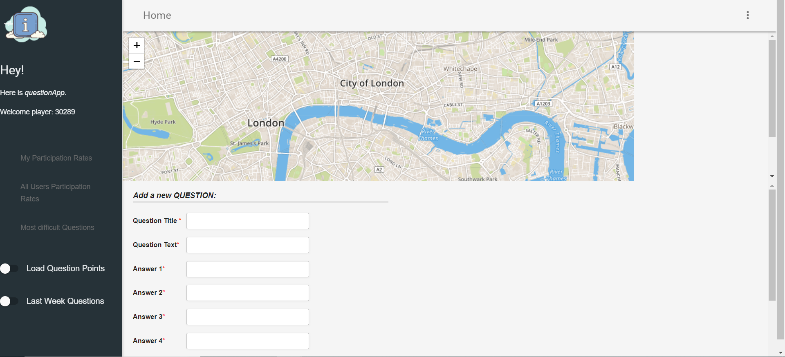
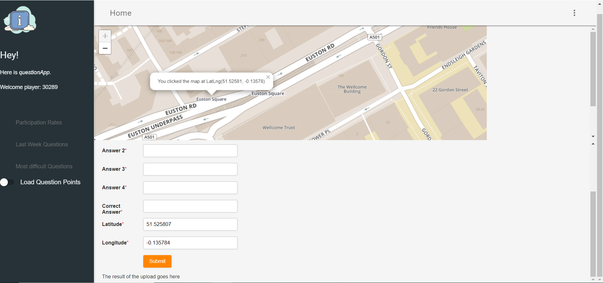
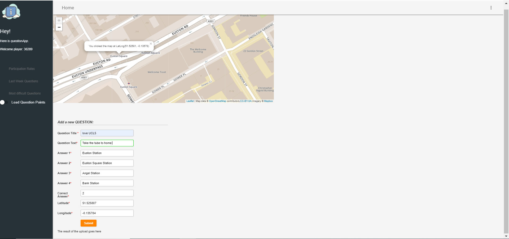
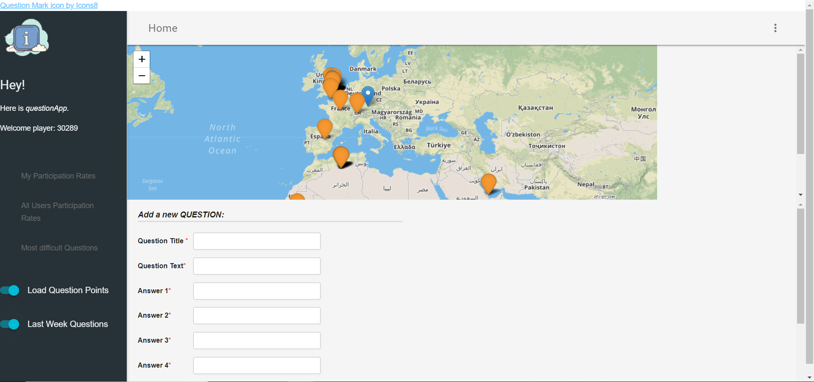
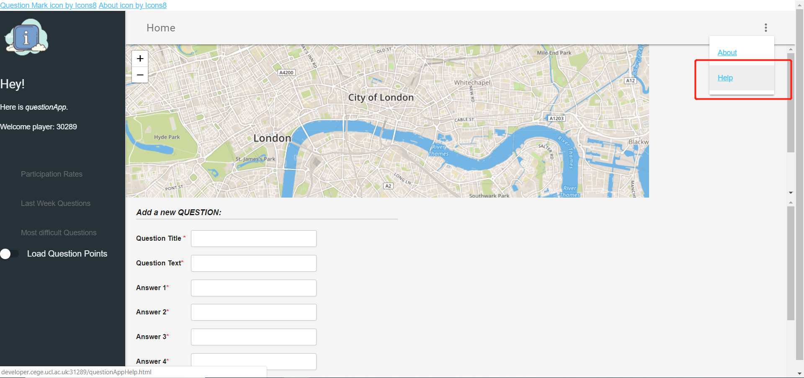

The questionApp is designed to upload and insert a new question to a database on the web server. Users can create a new question by clicking on a point on the leaflet map and add the question.

This application mainly consists of three division. First, the main body part contains a Leaflet map and a question form. Then, on your left-hand side is the navigation for some advanced functionalities. Besides, on the header of the layout, you can find a menu button which can lead you to the HELP and About documents.

How to fill the form
By clicking on a point the map, the questionApp will help you fill in the latitude and longitude and fix them to show 6 decimal places.

You also need to fill in the question form. The correct answer must be a number between 1-4. After finishing the table, you can click the orange “submit” button to upload your new question.
NB. Every textbox are the required fields, so please make sure you enter a legal question, or you will receive the specific alert to remind you to re-enter the invalid field.

How to use the advanced functions
To load or remove the quiz point layer that created by yourself, you can just easily exploit the toggle switch button. If it is on (shown in the screenshot), the layer loads.
Clicking on the participation rates submenu, you can choose to look at your data or all users’ daily participation rates.
Clicking on the last week questions button, you can get the question creates added in the last week by any users. Those points show in orange.
Clicking on the most difficult questions button, you will get the list of the five most difficult questions.

How to get the help doc
To get the help information, you can make use of the menu on the header.